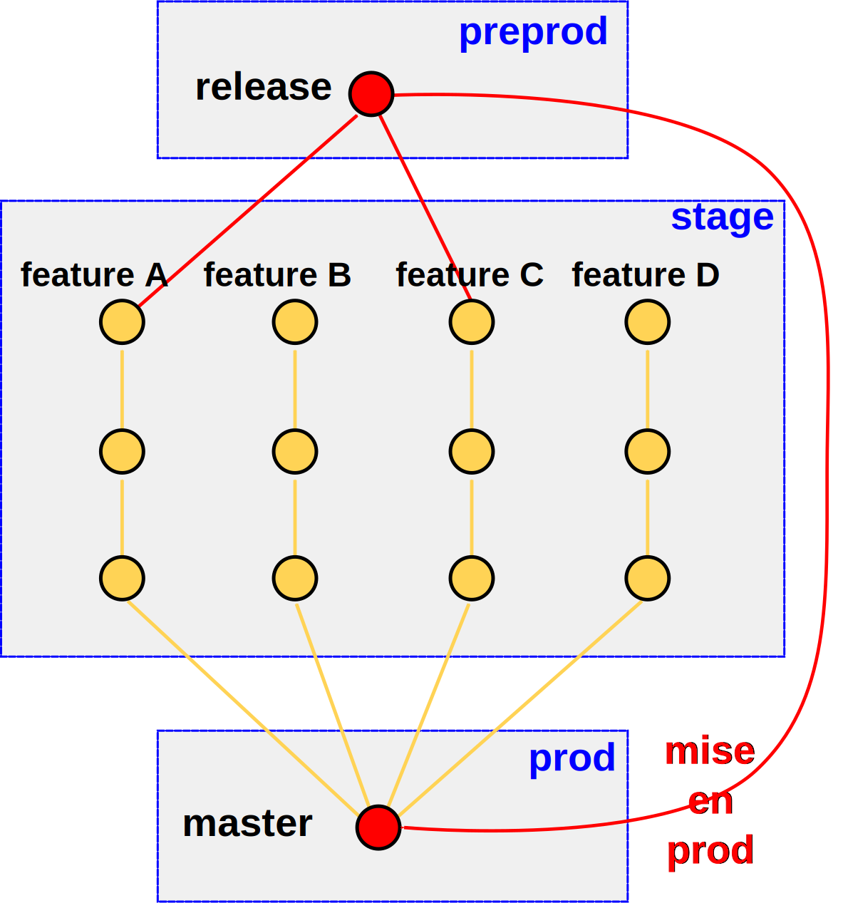
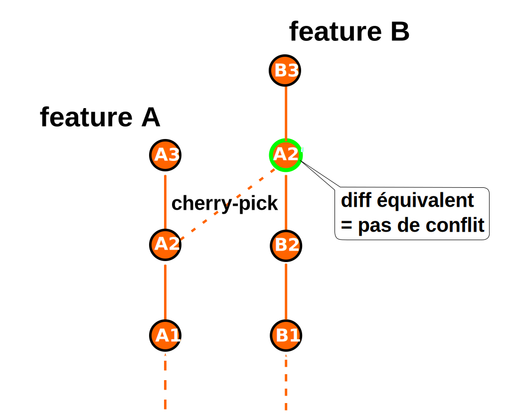
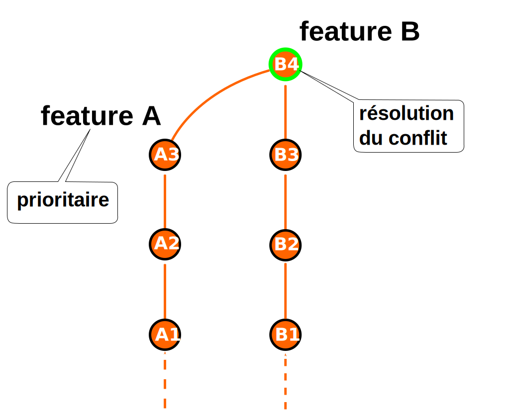

Alexandre DUBREUIL - Dimitri BAELI - Arnaud PFLIEGER
https://github.com/lesfuretsL'équipe de développement est séparé en 6 streams ou feature team, avec 22 développeurs, 3 devops (automatisation et opération), 1 archi-codeur
Le site est constitué d'une application front et une apllication backoffice
L'esprit avant le daily delivery : planifier / estimer / coder / tester / release de manière mensuelle
L'esprit du daily : livrer ce qui est prêt le jour suivant
L'ancienne organisation avant la mise en place du daily delivery
"Notre plus haute priorité est de satisfaire le client en livrant rapidement et régulièrement des fonctionnalités à grande valeur ajoutée."


Source: http://paulhammant.com/2013/03/13/facebook-tbd-take-2/


Parce que c'est mieux de faire les choses à l'envers


Les stacks arrivent par mail à partir de chaque environnement.
Le reporting se fait en batch via des mails (format excel) et en live via le backoffice

Tout le déploiement est fait avec 0 downtime en utilisant un système style blue / green.
Regroupement d'outils de validations manuelles et automatiques
Outil développé par la QE chez LesFurets.com pour faire de la comparaison d'image (perceptual diff)

Rassemble les branches features sur un même environnement grâce à l'octopus

Livrer quand c'est prêt
L'intégration continue (combinaison de TeamCity et Jenkins) effectue à chaque commit :


1 - Retour arrière : annuler une modification est simple
2 - Mettre le fichier en conflit dans le même état dans les deux branches ➜ utilisation du cherry-pick
3 - Merge entre branches ➜ on impose un ordre de livraison

La facilité de merge témoigne de la santé du code
SOLID ➜ Single responsibility principle
Quand et pourquoi effectuer le feature toggle avec une branche feature
Il y aura des perturbations inévitables, et il faudra faire un point de synchronisation